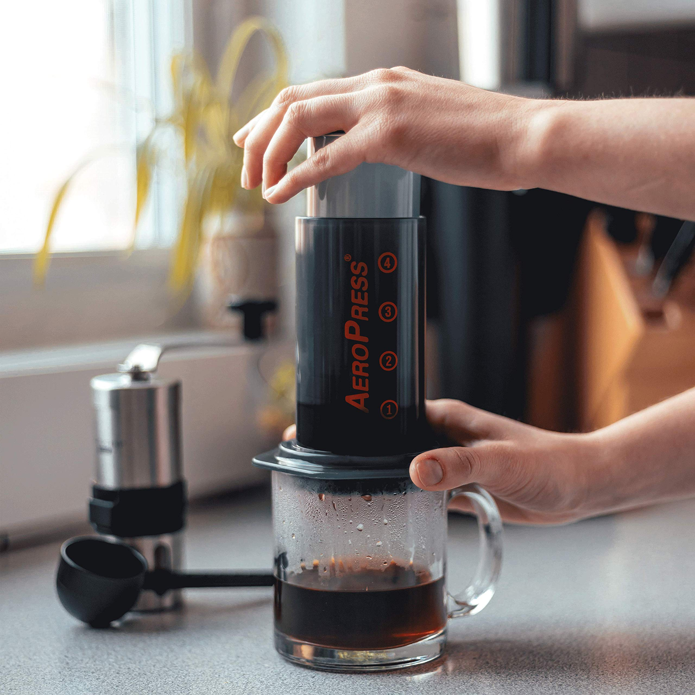

A Recipe for Aeropress Coffee

Description
If you like coffee, you've probably heard of the Aeropress before. It's a plastic plunger-like device that allows you to brew drip coffee however you like in minutes.
It works by allowing the grounds to mix with water for some time before having the user place the Aeropress over a mug and push the plunger to extract the coffee through the filter.
The result is a clean, full bodied cup of coffee that is sure to please.
Since there are so many variables you can change, like the grind size of the coffee, the coffee itself, the type of filter you use, the temperature of the water, and more, everyone has their own way of making Aeropress coffee.
I'd like to share the recipe that I use to make my daily coffee.
Ingredients
- A digital scale
- 14 grams of medium-ground medium-roast Colombian coffee
- A 1zpresso coffee hand grinder
- 200 grams of right-off-the-boil water
- An Aeropress
- The Aeropress stirring rod
- A standard Aeropress paper filter
Steps
- Begin by placing 14 grams of coffee in the 1zpresso grind chamber and grinding all of it.
- Start boiling your water.
- Place your Aeropress in the inverted configuration, with the plunger upright (rubber facing upwards) and the chamber on top.
- Transfer the ground coffee to the Aeropress brewing chamber.
- Add the boiling water to the brewing chamber, pouring in a spiral pattern to ensure saturation of all the grounds.
- (Optional)Swirl the entire Aeropress assembly a few times to distribute the water and grounds evenly.
- Use the stirring rod to stir the coffee in a circular pattern 3 times, making sure to get the grounds at the bottom and sides of the chamber.
- Wait 60 seconds after stirring.
- Follow the stirring instructions listed above again.
- Place your mug upside down on top of the Aeropress and swiftly turn the entire assembly so that the mug is upright and the Aeropress is on top, upside down.
- Press with moderate force until all of the liquid has been pushed through.
Back to the main page